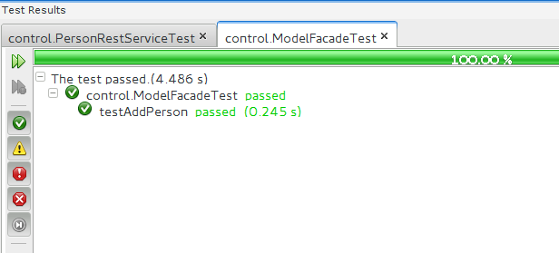
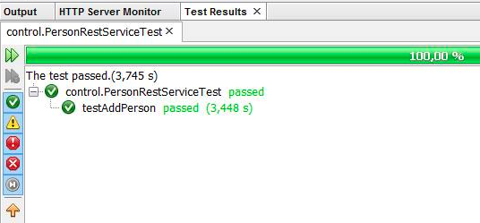

Vi har lavet nogle JUnit test hvor vi tester vores Facade og vores RestService. Vi tester på om vi kan tilføje en person til databasen.
Den første test vi lavede var vores JUnit test hvor vi adder en person 
Den anden test vi har lavet var en RestAssured test som er bygget op på en lidt anden måde. RestAssuredTesten tester på vores HTTP metode om der er hul igennem til hjemmesiden og serveren I bund og grund kan man sige at når man bruger PostMan og skriver sit post request gør du det samme som du ville gøre i en restAssured test, bare manuelt, så en restAssured test er et PostMan request, gjort automatisk 